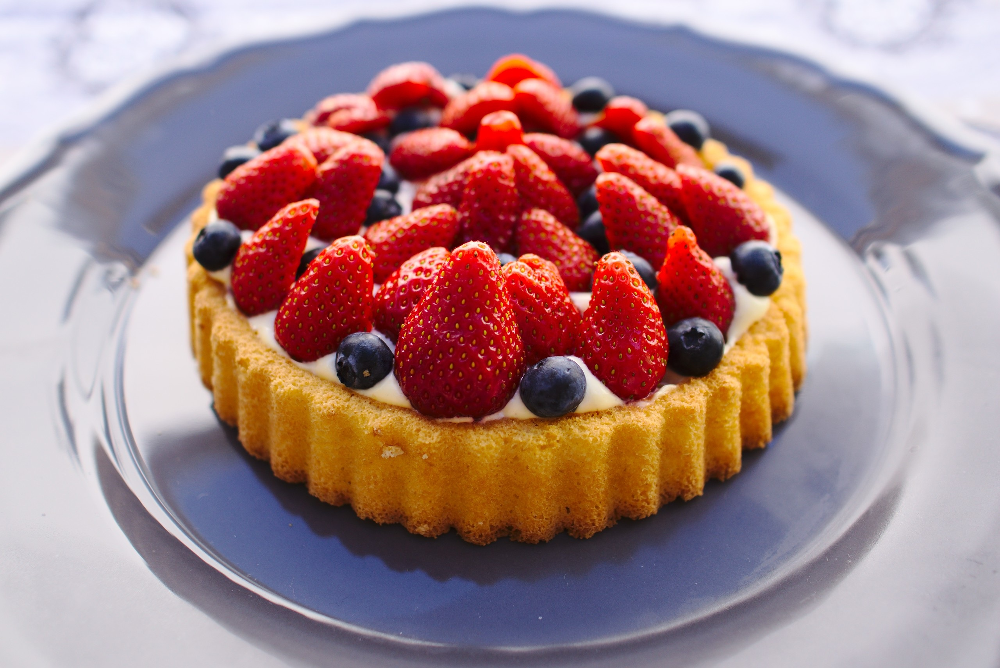
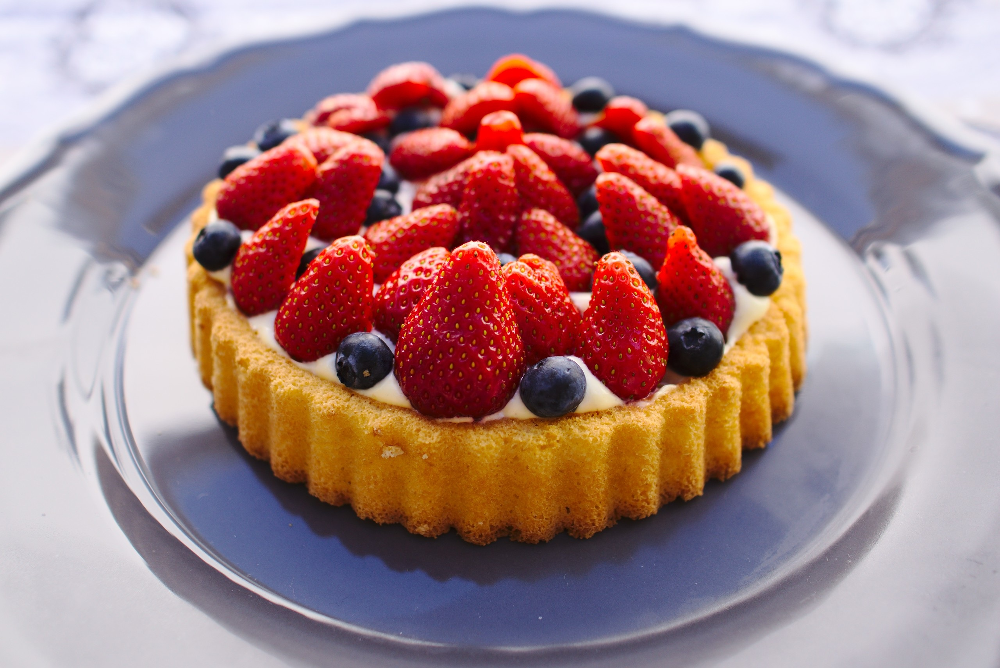

Intorduction
From apple pie to ice cream to chocolate chip cookies, Americans sure do love dessert. While some people enjoy whipping up their favorite desserts at home, sometimes it’s nice to treat yourself to an expertly crafted pastry, slice of cake, brownie sundae or other decadent sweet treat at a charming dessert shop. If you’re looking to satisfy your sweet tooth, these local favorites are the best places in each state to get dessert.
To find the best dessert shop in every state, we looked at online reviews from locals and tourists as well as ratings from local and national publications like newspapers, magazines and travel guides. We made sure these spots had a variety of dessert offerings rather than only offering just the best ice cream or the best doughnuts in each state. We also focused on places that stay open into the evening so you can swing by for a sweet treat after dinner.
 Our philosophy
Our philosophy
This restaurant is based on the contents made by the chef in France and Japan.Starting from the way of making and selling cakes in foreign countries.Don't change the recipe to hope you can enjoy the same dessert in Taiwan as overseas.This shop uses French President brand animal fresh cream, which is the real source of milk.Not only refreshing and non-greasy, but also rich in frankincense.In addition, the cake insists on not using semi-finished productsFrom jams, ice products, chocolate sauce, cake decorations, all of them are made with safe materials and safe techniques.The fruit part insists on not using canned fruit.A confectionary shop that uses seasonal fruits and brings out natural flavors with pure materials.And provide a variety of overseas flavored foreign fruits at reasonable prices.Because it is a natural raw material, it is not only impossible to produce in large quantities, but also needs to be produced in small quantities to maintain stability.If you insist on making it from scratch, the cost of raw materials and personnel will be considerable.However, we prefer to set the price according to the price in Taiwan (about 1/2 to 1/3 of the foreign price).Let more customers who like French desserts have easier access to these French desserts.This is our ideal.
Get a free cup of macchiato with any purchase !
The latest introduction of mango flavor !
Buy a pasty get a strawberry flavor panna cotta
The matcha ice-cream is on sale now !
The pitaya panna cotta is sold at 30% off !
 
